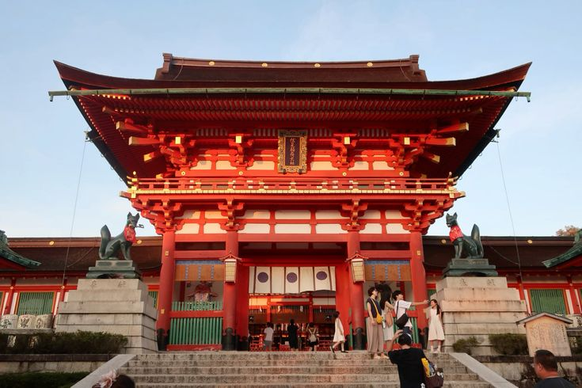

Sejarah

Jepang memiliki sejarah panjang yang di mulai sejak zaman kuno. Jepang pernah di pimpin oleh kaisar dan para shogun, terutama pada masa samurai. Pada Tahun 1868, terjadi Restorasi Meiji yang membuat Jepang berkembang pesat dan mulai menjadi negara modern. Jepang kemudian terlibat dalam Perang Dunia II dan mengalami kehancuran setlah bom atom di Hiroshima dan Nagasaki pada tahun 1945. Setlah perang, Jepang membangun kembali negaranya hingga menjadi salah satu negara maju dengan teknologi dan ekonomi yang kuat. Sebelum berkembang menjadi Jepang modern, masyarakat Jepang melewati beberapa zaman penting. Pada zaman Jomon, masyarakat hidup dengan berburu, menangkap ikan, dan membuat tembikar. Kemduian pada zaman yayoi, mula berkembang pertanian padi, penggunaan logam, dan terbentuknya kelompok - kelompok masyarakat. Memasuki zaman heian (794-1185) Kyoto menjadi pusat pemerintahan dan kebudayaan. Setlah itu terjadi zaman sengoku, ketika banyak wilayah mengalami perang antarklan hingga akhirnya Jepang berhasil disatukan oleh Oda Nobunaga, Toyotomi Hideyoshi, dan Tokugawa leyasu.s
Sat ini Jepang dikenal sebagai salah satu negara maju di dunia. Jepang memiliki teknologi yang canggih,ekonomi yang kuat, serta transportasi modern seperti kereta cepat shinkansen. Budaya Jepang lainnya seperti anime, manga, makanan, tradisi, dll, tetap populer di berbagai negara, Jepang juga terus mengembangkan teknologi sambil mempertahankan budaya dan tradisi yang sudah ada sejak dulu.
Geografis

Jepang adalah negara kepulauan yang terletak di Asia Timur dan berada di Samudra Pasifik. Jepang terdiri dari empat pulau utama, yaitu Honshu, Hokkaido, Kyushu, dan Shikoku. Sebagian besar wilayahnya berupa pegunungan dan memiliki banyak gunung berapi. Jepang juga sering mengalami gempa bumi dan tsunami karena berada di kawasan Cincin Api Pasifik. Ibu kotanya adalah Tokyo, yang terletak di Pulau Honshu.
Wilayah Jepang didominasi oleh pegunungan dan hutan, dengan Gunung Fuji sebagai gunung tertinggi. Jepang memiliki iklim yang berbeda - beda di setiap wilayah, dari dingin si utara hingga lebih hangat di selatan. Negara ini juga memilki banyak pantai, sungai, dan pulau-pulau kecil.
Wisata
Jepang memiliki banyak tempat wisata yang menarik dan beragam, mulai dari keindahan alam, budaya, hingga tempat modern. Salah satu yang paling terkenal adalah Gunung Fuji, yang sering menjadi simbol Jepang dan dapat dinikmati pemandangannya dari berbagai daerah. Selain itu, Kyoto terkenal dengan kuil-kuil kuno, taman tradisional, dan suasana Jepang zaman dahulu. Ada juga Tokyo yang menawarkan gedung modern, pusat perbelanjaan, taman hiburan, serta berbagai tempat hiburan.
Selain wisata kota dan sejarah, Jepang juga memiliki banyak wisata alam dan budaya lainnya. Nara terkenal dengan taman rusa dan kuil bersejarah, sedangkan Osaka dikenal dengan kuliner dan tempat hiburannya. Saat musim semi, wisatawan banyak datang untuk melihat bunga sakura yang bermekaran di taman dan sepanjang jalan. Jepang juga memiliki berbagai festival tradisional, pemandian air panas (onsen), serta makanan khas seperti sushi, ramen, dan takoyaki yang membuat pengalaman berwisata semakin menarik.
Gunung Fuji

Gunung Fuji merupakan salah satu wisata dan simbol paling terkenal di Jepang dengan ketinggian sekitar 3.776 meter. Gunung ini terletak di Pulau Honshu dan memiliki bentuk kerucut yang indah, terutama ketika puncaknya tertutup salju. Banyak wisatawan datang untuk menikmati pemandangan Gunung Fuji dari berbagai tempat, seperti danau, taman, dan desa di sekitarnya. Selain menikmati pemandangan, pengunjung juga dapat melakukan pendakian pada musim yang diperbolehkan. Keindahan Gunung Fuji semakin menarik saat musim semi karena bunga sakura bermekaran di sekitarnya, sehingga menciptakan pemandangan khas Jepang yang sangat indah.
Kuil Fushimi Inari

Kuil Fushimi Inari merupakan salah satu tempat wisata terkenal di Kyoto, Jepang, yang dikenal dengan ribuan gerbang merah atau torii yang berjajar hingga ke kawasan Gunung Inari. Kuil ini didedikasikan untuk Inari, dewa yang dalam kepercayaan Shinto berkaitan dengan padi, pertanian, dan kemakmuran. Pengunjung dapat berjalan menyusuri jalur torii sambil menikmati suasana alam yang tenang dan pepohonan yang rimbun. Selain keindahan bangunannya, tempat ini juga menarik karena memiliki sejarah dan budaya Jepang yang kuat, sehingga banyak wisatawan datang untuk menikmati pemandangan sekaligus mengenal tradisi Jepang